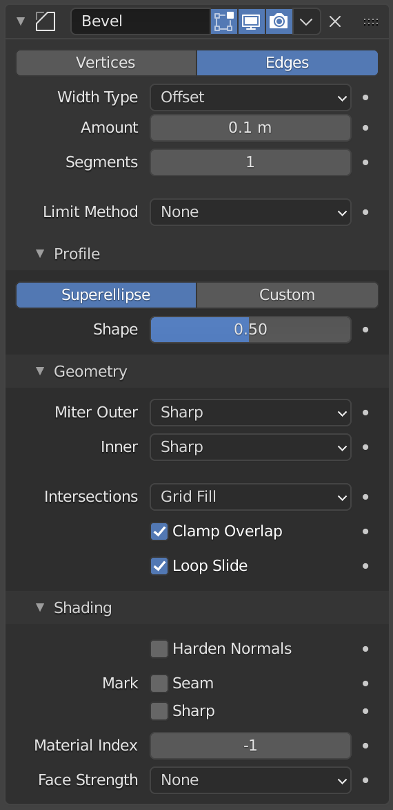
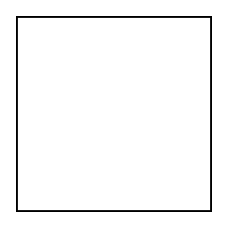
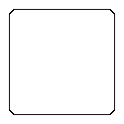
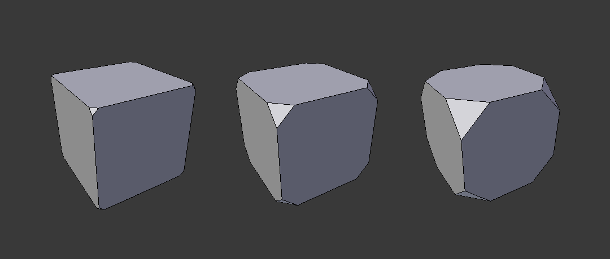
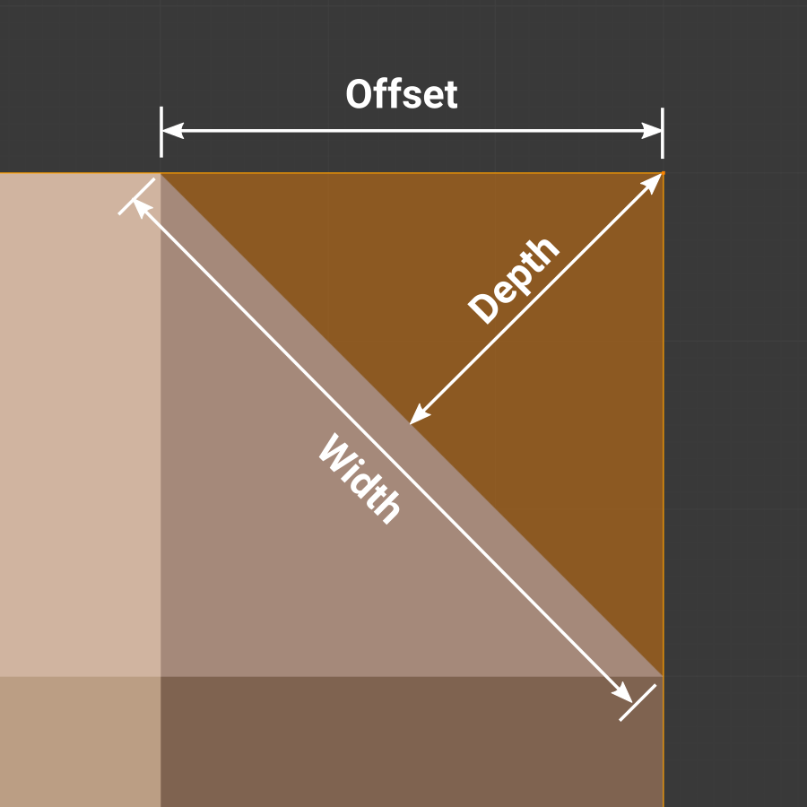
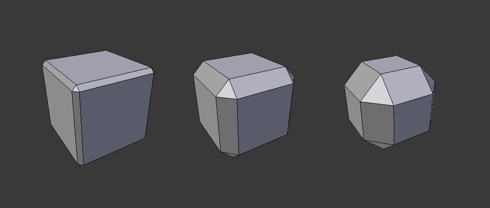
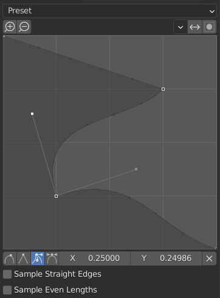
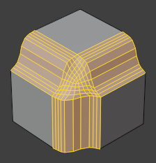
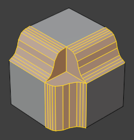
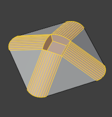

Bevel Modifier¶


Modifier Bevel.¶
Modifier Bevel tạo vát (bevel) các cạnh của mesh mà nó được áp dụng lên, với một số kiểm soát về cách thức và vị trí bevel được áp trên mesh.
Nó là một phương án không phá hủy thay thế cho thao tác Bevel trong Edit Mode.
 Chưa bevel.¶ |
 Đã bevel.¶ |


Tùy chọn¶
- Affect
- Vertices:
Chỉ những vùng gần vertex được bevel, các cạnh giữ nguyên.
- Edges:
Bevel các cạnh, tạo ra các giao điểm tại vertex.

Ba khối lập phương với độ rộng bevel 0.1, 0.3 và 0.5, với tùy chọn Vertices được chọn.¶


- Kiểu Độ rộng
Xác định cách Width sẽ được diễn giải để quyết định lượng bevel.
- Offset:
Khoảng cách từ cạnh mới đến cạnh gốc.
- Width:
Khoảng cách giữa hai cạnh mới được tạo bởi bevel (hoặc các cạnh hai bên của bevel nếu có nhiều hơn một segment).
- Depth:
Giá trị là khoảng cách vuông góc từ face bevel mới đến cạnh gốc.
- Percent:
Phần trăm chiều dài của cạnh kề mà các cạnh mới trượt dọc theo.
- Absolute:
Khoảng cách chính xác dọc theo các cạnh kề với cạnh được bevel. Sự khác biệt so với Offset thấy rõ khi các cạnh chưa bevel gắn với cạnh đã bevel gặp nhau ở một góc không vuông.
- Width
Kích thước của hiệu ứng bevel. Xem Width Method bên dưới.

Ba khối lập phương với độ rộng bevel 0.1, 0.3 và 0.5.¶
- Segments
Số edge loop được thêm dọc theo face của bevel.
- Phương pháp giới hạn
Dùng để kiểm soát bevel được áp vào đâu trên mesh.
- None:
Không giới hạn, mọi cạnh đều sẽ được bevel.
- Angle:
Chỉ bevel những cạnh mà góc giữa normal của các face kề cộng với Angle đã định nhỏ hơn 180 độ. Nhằm cho phép bạn chỉ bevel các cạnh sắc của object mà không ảnh hưởng đến các bề mặt mượt của nó.
- Weight:
Dùng một attribute để xác định độ rộng của bevel. Khi trọng số bevel bằng 0.0, không có bevel nào được áp dụng.
Có thể chọn bất kỳ attribute nào trên mesh đầu vào. Theo mặc định, các attribute
bevel_weight_edgevàbevel_weight_vertđược chỉnh trong edit mode sẽ được dùng. Để tiện dụng, modifier liệt kê các attribute từ mesh gốc trong danh sách thả xuống, nhưng các attribute do những modifier trước đó tạo ra cũng có thể dùng. Các attribute có domain hoặc kiểu không khớp sẽ tự động được nội suy sang đúng kiểu.- Vertex Group:
Dùng trọng số từ một vertex group để xác định độ rộng của bevel. Khi trọng số vertex bằng 0.0, không có bevel nào được áp dụng. Một cạnh chỉ được bevel nếu cả hai vertex của nó đều nằm trong vertex group. Xem tại đây về cách chỉnh trọng số vertex group.
- Invert
Đảo ngược ảnh hưởng của vertex group đang chọn, nghĩa là nhóm lúc này đại diện cho những vertex sẽ không bị biến dạng bởi modifier.
Cài đặt này đảo ngược các giá trị weight của nhóm.
Profile¶
Superellipse¶
Tạo một bevel với đường cong lõm hoặc lồi đồng nhất.
- Shape
Hình dạng của bevel, từ lõm đến lồi. Không có tác dụng nếu Segments nhỏ hơn 2.
Custom Profile¶


Widget profile tùy chỉnh.¶
Widget này cho phép tạo một profile do người dùng định nghĩa với độ phức tạp hơn so với tham số profile đơn lẻ. Công cụ modal cho phép bật/tắt custom profile, nhưng hình dạng của profile chỉ chỉnh sửa được trong panel tùy chọn sau khi thao tác được xác nhận.
Profile bắt đầu ở góc dưới bên phải của widget và kết thúc ở góc trên bên trái, như thể nó nằm giữa hai cạnh gặp nhau vuông góc. Các điểm điều khiển được tạo trong widget và sau đó đường đi được lấy mẫu với số segment từ modifier Bevel.
- Miter Shape
Hình dạng của các mẫu miter, từ lõm đến lồi. Không có tác dụng nếu Segments nhỏ hơn 2.
Ghi chú
Thanh trượt Miter Shape vẫn hoạt động khi miter được bật vì nó vẫn điều khiển hình dạng của các profile miter.
- Presets
Các preset Support Loops và Steps được dựng động tùy theo số segment trong bevel. Nếu số segment thay đổi, preset sẽ phải được áp lại.
- Sampling
Các mẫu (sample) sẽ được thêm vào từng điểm điều khiển trước, rồi nếu đủ mẫu, chúng sẽ được chia đều giữa các cạnh. Tùy chọn Sample Straight Edges quyết định việc mẫu có được thêm vào những cạnh có điểm điều khiển sắc ở hai bên hay không. Nếu không đủ mẫu để mỗi cạnh nhận cùng số mẫu, chúng sẽ chỉ được thêm vào các cạnh cong nhất, vì vậy nên dùng số segment ít nhất bằng số điểm điều khiển.
Geometry¶
- Miter Inner/Outer
Một miter được hình thành khi hai cạnh đã bevel gặp nhau ở một góc. Ở phía góc lớn hơn 180 độ (nếu có), nó được gọi là outer miter. Nếu nhỏ hơn 180 độ thì gọi là inner miter. Outer miter và inner miter có thể được đặt riêng từng cái thành một trong các mẫu sau:
- Sharp:
Các cạnh gặp nhau tại một điểm sắc, không thêm vertex nào trên các cạnh.
- Patch:
Các cạnh gặp nhau tại một điểm sắc, nhưng ngoài ra hai vertex bổ sung được thêm gần điểm đó để các cạnh và face tại vertex có thể bị siết lại ít hơn so với trường hợp Sharp. Mẫu này không hợp lý đối với inner miter, nên với chúng nó hành xử giống Arc.
- Arc:
Hai vertex được thêm gần điểm gặp nhau, và một cung cong nối chúng lại với nhau.
Thanh trượt Spread điều khiển các vertex mới cách điểm gặp nhau bao xa.
Widget đường cong Profile điều khiển hình dạng của cung.
- Spread
Giá trị dùng để dàn các vertex bổ sung ra xa nhau cho các miter không phải kiểu Sharp. Tùy chọn này khả dụng khi Miter Inner được đặt là Arc.
- Giao điểm
Khi hơn hai cạnh đã bevel gặp nhau tại một vertex, một mesh được tạo ra như một cách hoàn tất phần giao giữa hình học được tạo. Tùy chọn này điều khiển phương pháp dùng để tạo mesh đó.
- Grid Fill:
Phương pháp mặc định để dựng các giao điểm, hữu ích khi muốn profile bevel được nối tiếp mượt mà. Nếu không bật Custom Profile, đường cong của profile tiếp tục xuyên qua giao điểm, nhưng với custom profile, nó chỉ tạo một lưới mượt trong ranh giới của giao điểm.
- Cutoff:
Tạo một face cắt (cutoff) ở cuối mỗi cạnh đã bevel đi vào vertex. Điều này hữu ích nhất với custom profile khi giao điểm mới quá phức tạp để lấp bằng lưới mượt.
Với giao điểm ba chiều, khi các góc trong của face các profile cutoff gặp nhau tại cùng một vị trí, sẽ không có face trung tâm nào được tạo.
Hướng của các face cutoff phụ thuộc vào normal của vertex gốc.
Các tùy chọn phương pháp giao điểm.¶ 
Phương pháp giao điểm Grid fill.¶

Giao điểm cutoff ba chiều với các vertex trong được gộp lại.¶

Phương pháp giao điểm Cutoff với một face trung tâm.¶
- Clamp Overlap
Giới hạn độ rộng của từng cạnh đã bevel để các cạnh không thể gây ra giao điểm chồng lấn với hình học khác.
- Loop Slide
Nếu có các cạnh chưa bevel cùng với các cạnh đã bevel đi vào một vertex, bevel sẽ cố gắng trượt dọc theo những cạnh đó khi có thể. Tắt tùy chọn này có thể cho độ rộng bevel đồng đều hơn.


Shading¶
- Harden Normals
Khi bật, normal theo từng vertex của các face bevel được điều chỉnh để khớp với các face xung quanh, còn normal của các face xung quanh không bị ảnh hưởng. Điều này giữ cho các mặt xung quanh phẳng (nếu chúng vốn phẳng), với các face bevel chuyển sắc mượt sang chúng. Để hiệu ứng này hoạt động, mesh phải có một attribute custom split normals. Để tiện dụng, một attribute
custom_normalsẽ được tạo nếu chưa có sẵn.- Đánh dấu
- Seam
Nếu một cạnh seam cắt một cạnh không phải seam và bạn bevel tất cả chúng, tùy chọn này sẽ duy trì sự lan truyền seam như mong đợi.
- Sharp
Tương tự Mark Seams, nhưng dành cho các cạnh sắc (sharp).
- Material Index
Chỉ số của material slot dùng cho bevel. Khi đặt là -1, material của face gốc gần nhất sẽ được dùng.
- Face Strength
Đặt Face Strength trên các face liên quan đến bevel, theo mode chỉ định ở đây. Điều này có thể dùng kết hợp với một modifier Weighted Normals đứng sau (với tùy chọn Face Influence được bật).
- None:
Không đặt face strength.
- New:
Đặt face strength của các face mới dọc cạnh thành Medium, và face strength của các face mới tại vertex thành Weak.
- Affected:
Ngoài những gì đã đặt cho trường hợp New, còn đặt các face kề với face mới có strength Strong.
- All:
Ngoài những gì đã đặt cho trường hợp Affected, còn đặt toàn bộ các face còn lại của model có strength Strong.